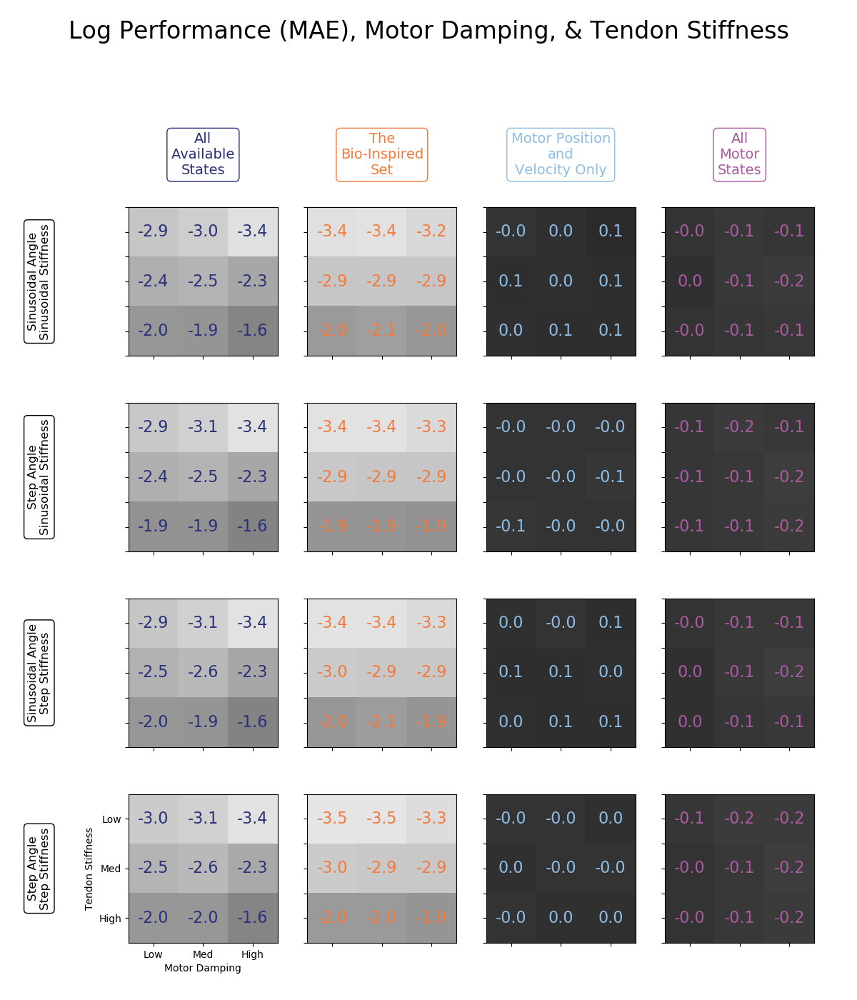
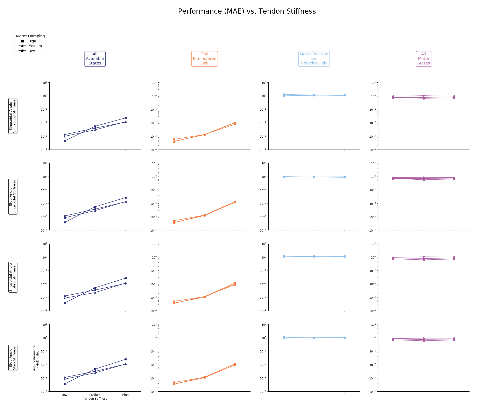
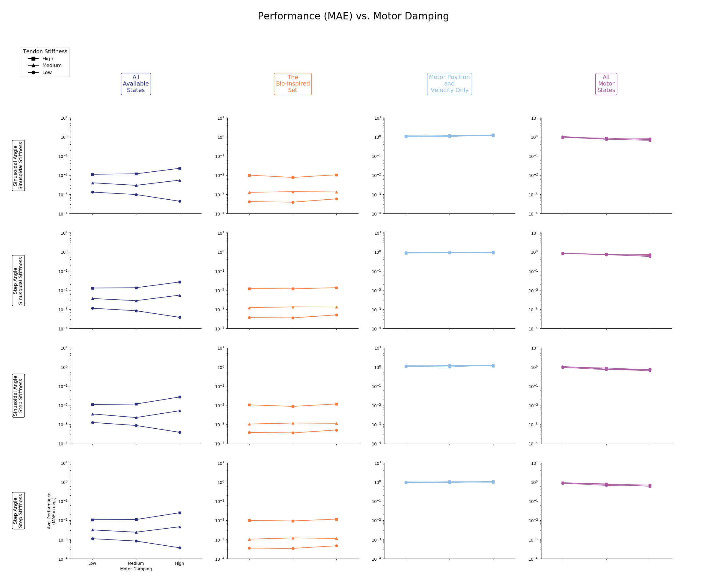
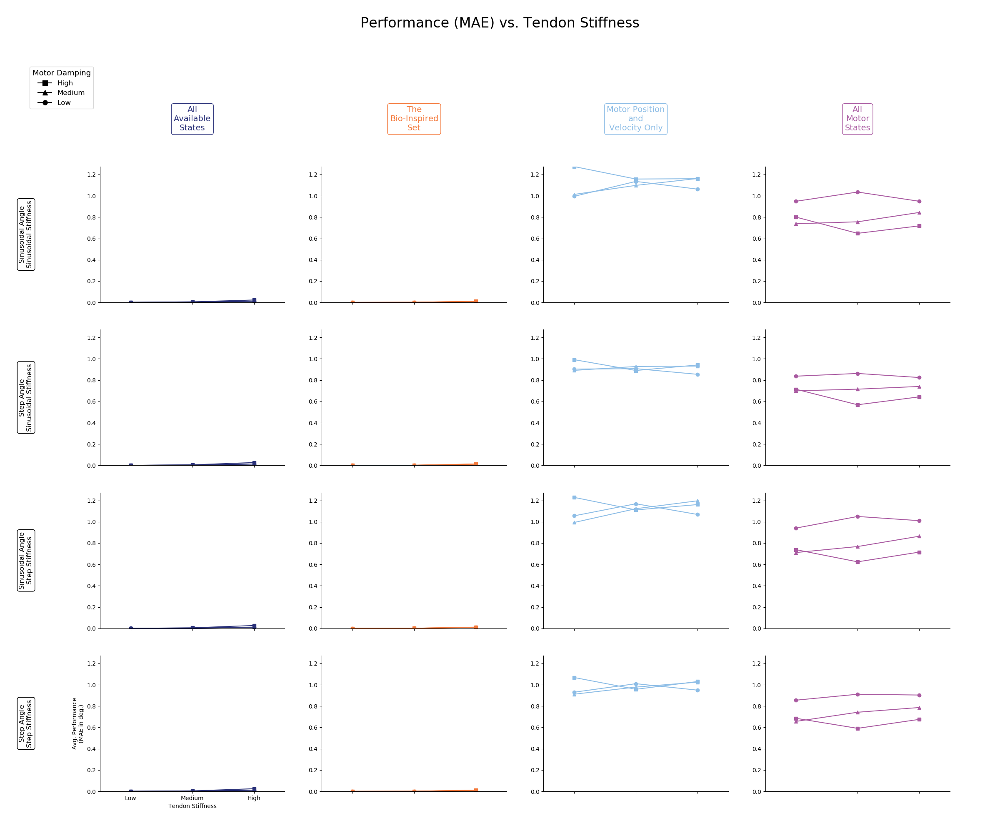
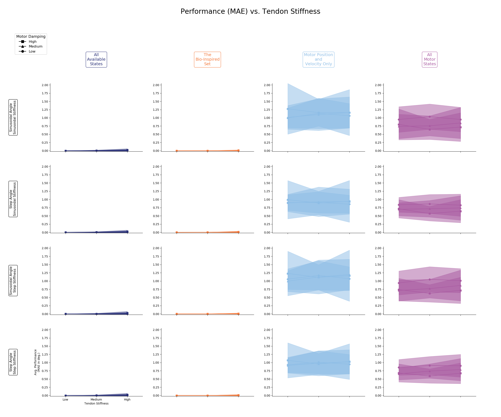
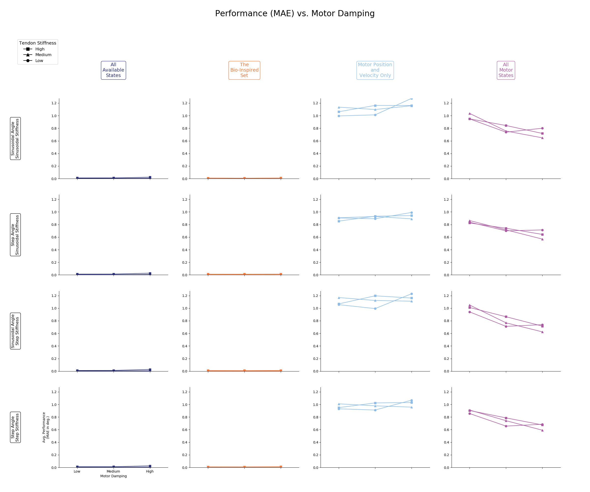
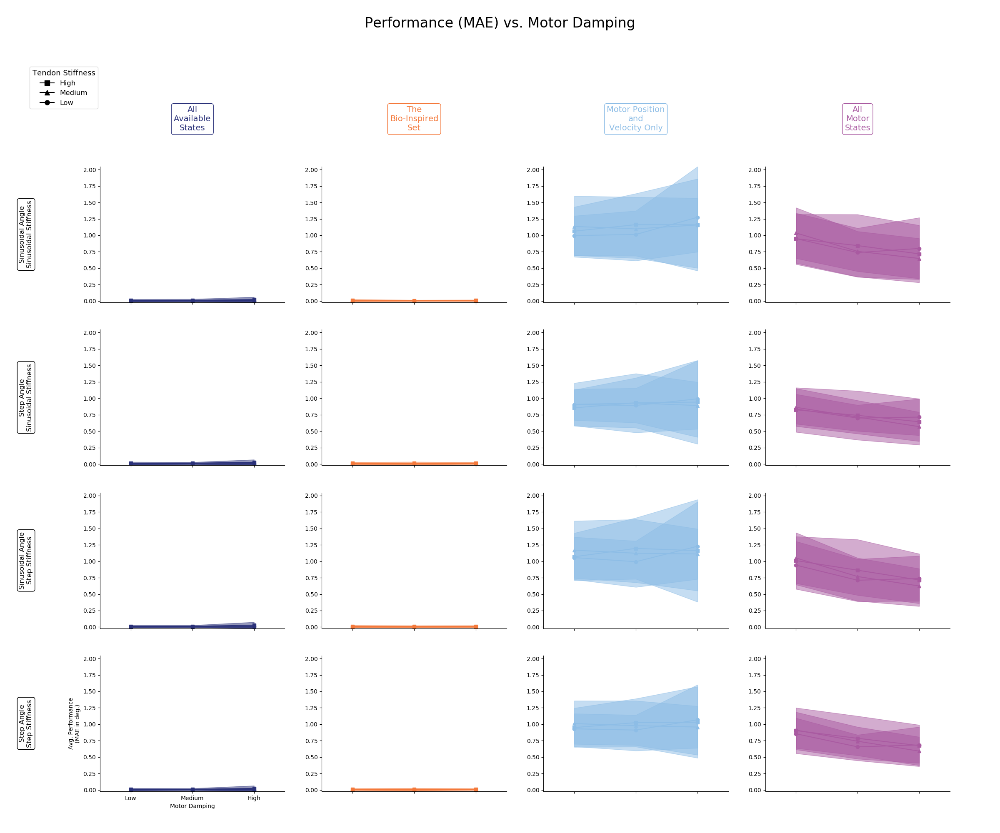

README.md for Figures Created on 2020/05/18 at 12:50.31 PST.
Notes
Consolidated trials for plant parameter sweep
Parameters
params = {
'Number of Trials' : 50,
'Babbling Duration' : 15,
'Number of Nodes' : 15,
'metrics' : ['MAE'],
'Babbling Type' : 'continuous',
'Number of Epochs' : 10000
}Figures
 Figure 1: Heatmap representation of the average logarithmic mean absolute errors for each of the four sensory groups (columns) across all four generalization experiments (rows). It should be noted that sensory sets that include tendon tension (i.e., the set of all available states and the bio-inspired set), will perform 2-3 orders of magnitude better than the kinematic sets across all tendon stiffness and motor damping settings with an apparent inverse relationship between tendon stiffness and performance. For all groups there appears to be no relationship between motor damping and performance.
 Figure 2: Average logarithmic performance (mean absolute error) for each of the four sensory groups (columns) across all four generalization experiments (rows) with respect to tendon stiffness (x-axis) and motor damping (see legend). Contrary to our hypothesis that the kinematic sets (right two columns) would increase their performance as tendon stiffness increased, we instead see that the sets that include tendon tension (left two columns) decrease their performance when the tendons become stiffer. However, they do not degrade to a level worse than the kinematic sets. This may be due to tendon tension information becoming less useful or unique as the tendons become more stiff, causing the neural networks to reduce the dimension of useful information and therefore performance. Interestingly, performance does not appear to be affected by the choice of motor damping.
 Figure 3: Average logarithmic performance (mean absolute error) for each of the four sensory groups (columns) across all four generalization experiments (rows) with respect to motor damping (x-axis) and tendon stiffness (see legend). Interestingly, performance does not appear to be affected by the choice of motor damping, although there may exist a slight positive correlation between motor damping and the performance of networks trained on the set of all motor states (i.e., a slight downward slope for the plots in the final column). This may be because the kinematic data associated with motor acceleration becomes more useful as the motors become more damped. Secondly, as seen in Figure 2 we again see that the sets that include tendon tension (left two columns) decrease their performance when the tendons become stiffer. However, they do not degrade to a level worse than the kinematic sets. This may be due to tendon tension information becoming less useful or unique as the tendons become more stiff, causing the neural networks to reduce the dimension of useful information and therefore performance.
 Figure 4: Linear scale version of Figure 2. It is difficult to see the trends associated with the tendon tension sets (left two columns), but this plot does assist in visualizing the correlation between performance and motor damping for neural networks trained on the set of all motor states (far right column).
 Figure 5: Linear scale version of Figure 2 with standard deviation bars.
 Figure 6: Linear scale version of Figure 3. It is difficult to see the trends associated with the tendon tension sets (left two columns), but this plot does assist in visualizing the correlation between performance and motor damping for neural networks trained on the set of all motor states (far right column).
 Figure 7: Linear scale version of Figure 2 with standard deviation bars.